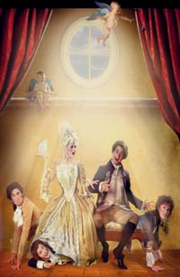

Bemutatóra készül a székesfehérvári Vörösmarty Színház. 2006. augusztus 1-jén, 21.00-kor mutatják be a Musica Regia fesztivál keretében, Beaumarchais: Figaro házassága c. művét, Lendvai Zoltán rendezésében. Az előadás főbb szerepeiben olyan nagyszerű művészek láthatóak, mint Szabó Győző, Bakonyi Csilla, Quintus Konrád, Xantus Barbara, Zsurzs Kati illetve Szabó Gyula.
Cselekmény: Figaro, Almaviva gróf komornyikja , és Susanna, a grófné komornája házasodni készülnek, de egybekelésüket többen meg akarják akadályozni, elsősorban a gróf, akinek tetszik a menyasszony, azután az idős Marcellina is, aki – egy tartozása fejében kicsikart ígéretére hivatkozva – Figarot akarja férjül venni. A Grófné is tud férje vonzalmáról Susanna iránt. Hogy szándékait kipuhatolja, a lány nevében találkára hívja, de első próbálkozása meghiúsul. Almaviva bírósági tárgyalást rendez Marcellina követelése ügyében. Ezen kiderül, hogy Figaro az idős asszony eltűntnek hitt gyermeke. Most már a grófnak engedélyt kell adnia az esküvő megtartására. A grófné – komornája nevében – ismét találkát kér férjétől, a levelet ezúttal meg is kapja, és nagy örömmel fogadja. A lakodalmat követő éjszakán Almaviva a parkban így a saját álruhás feleségének csapja a szelet, mert azt hiszi róla, hogy ő Susanna. A gróf, észrevéve ezt, nagy botrányt csap, de amikor mindenki lelepleződik, neki kell megszégyenülnie.
| W.A. Mozart: FIGARO HÁZASSÁGA - vígopera két felvonásban, magyar nyelven - A szövegkönyvét P. A. Beaumarchais színdarabja nyomán írta: Lorenzo da Ponte Zenei vezető: Döme Zsolt Korrepetitor: Réti Anikó Rendezőasszisztens: Láposi Réka Rendező: Lendvai Zoltán Bemutató: augusztus 1. kedd 22.00 h További előadások: 2006. augusztus 2., szerda 21.00 h 2006. augusztus 3., csütörtök 21.00 (ESŐNAP) 2006. augusztus 9., szerda 21.00 2006. augusztus 10., csütörtök 21.00 (ESŐNAP) |
Almaviva gróf: Szabó Győző Grófné: Bakonyi Csilla Figaro : Quintus Konrád Susanna: Xantus Barbara Cherubin: Száraz Dénes Marchellina: Zsurzs Kati Antonio, Fanchette apja: Matus György Bartholo: Bata János Basilio: Várfi Sándor Don Gusman de Hübele: Szabó Gyula Dupla Marék: Budaházy Árpád Fanchette: Csizmadia Ildikó Pedrillo: Szrapkó Nándor |
forrás: Székesfehérvári Vörösmarty Színház |